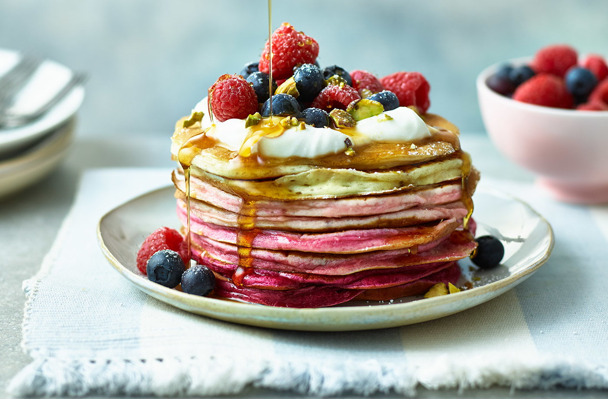

Pancakes

Pancakes have always been a breakfast favorite, but the poplularity of instant pancake batter has made homemade pancakes a dream of the past. Fortunately
for us, making pancakes from scratch is a relatively easy process.
Ingredients:
- 1 1/2 cups of all-purpose flour
- 3 1/2 teaspoons of baking powder
- 1 tablespoon of white sugar
- 1 1/4 cups of milk
- 1 egg
- 3 tablespoons of melted butter
- 1/4 tsp of salt
Directions:
- Mix the dry ingredients together in a large bowl.
- Mix the wet together.
- Create a well in the bowl of dry ingredients and pour the wet ingredients in.
- Whisk until the batter is smooth.
- Using a griddle on medium heat, pour approximately 1/4 cup of batter per pancake onto the griddle and brown on both sides.
- Serve with toppings of choice.